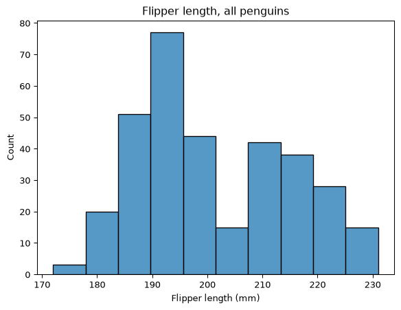
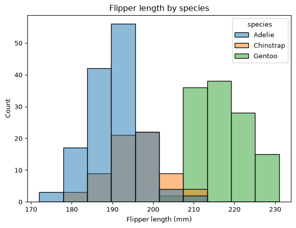
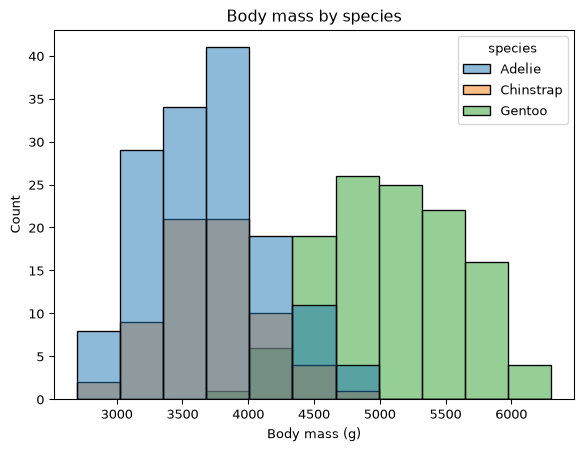
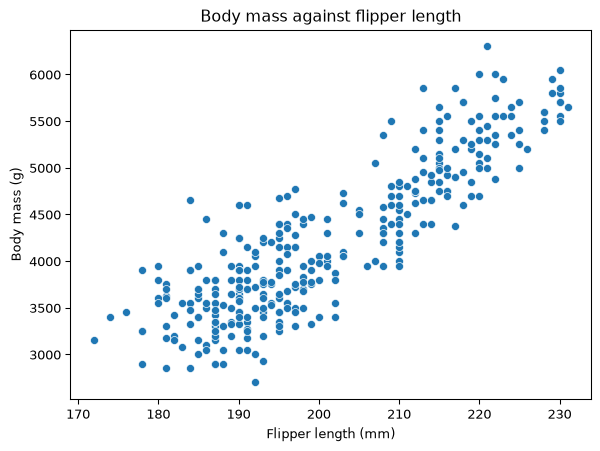
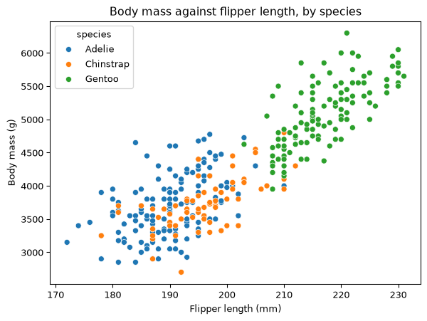
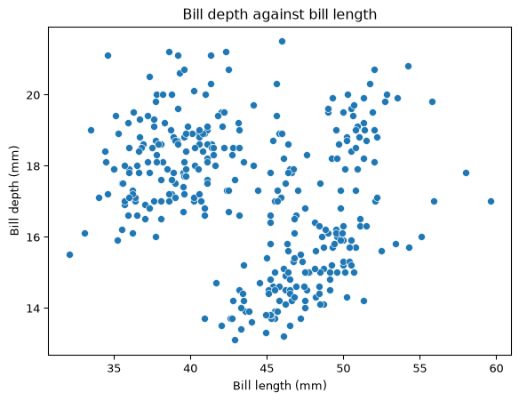
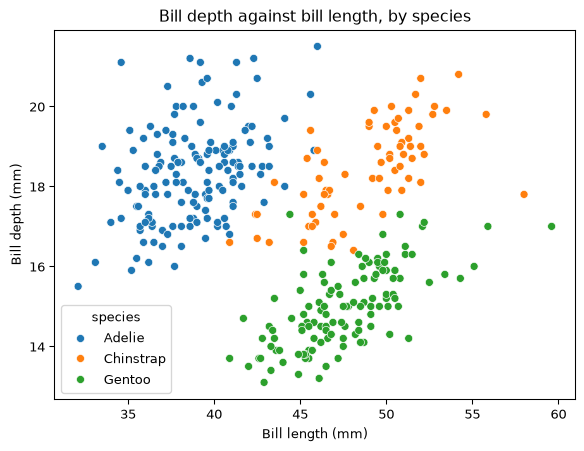
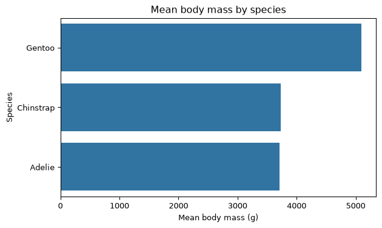
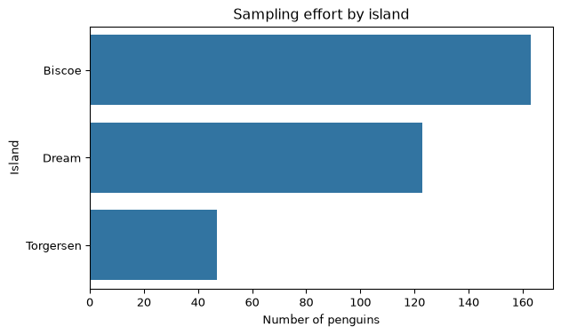
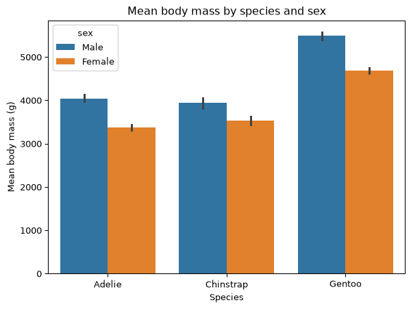

Code
import pandas as pd
import matplotlib.pyplot as plt
import seaborn as sns
url = 'https://eds-217-essential-python.github.io/data/penguins.csv'
penguins = pd.read_csv(url)🐧 One Cloud of Points, Three Species
Work the colab through with your partner first, then come here. The code below is one correct answer, not the only one. This was a 45 minute pair exercise with very little scaffolding, so there are several reasonable ways to write almost every cell. If your figure looks different but shows the same thing, you were right.
The written answers matter more than the code. You can already tell whether your code ran. What you cannot check on your own is whether you read the figure correctly, and that is what the green Answer boxes are for. Compare your markdown cells against them.
⬅️ Back to the colab
1. How many rows and columns? What are the column names, and which are numeric?
(344, 7)
species object
island object
bill_length_mm float64
bill_depth_mm float64
flipper_length_mm float64
body_mass_g float64
sex object
dtype: object344 rows and 7 columns. Four are numeric: bill_length_mm, bill_depth_mm, flipper_length_mm and body_mass_g. The other three, species, island and sex, are text.
Notice that body_mass_g is float64 even though every mass in the file is a whole number of grams. That is not a decision anybody made about penguins. A column with a missing value cannot be an integer column in pandas, because NaN is a float, so the missing values you are about to find in question 3 have already changed the dtype of the column.
2. Count the rows for each species, and separately for each island. Which species is rarest, and which island has the most birds?
species
Adelie 152
Gentoo 124
Chinstrap 68
Name: count, dtype: int64
island
Biscoe 168
Dream 124
Torgersen 52
Name: count, dtype: int64Chinstrap is the rarest species at 68 birds, fewer than half the 152 Adelie, and Biscoe has the most birds at 168, ahead of Dream at 124 and Torgersen at 52.
Read those as counts of sampling effort rather than counts of penguins in Antarctica. The researchers caught what they could reach from Palmer Station over three seasons. Nothing in this file says Chinstrap are the rarest bird on the peninsula; it says the field teams handled the fewest of them.
3. Run .isnull().sum(). Two different things are going on in that output. Say what each one probably is.
species 0
island 0
bill_length_mm 2
bill_depth_mm 2
flipper_length_mm 2
body_mass_g 2
sex 11
dtype: int64Two missing measurements and nine undetermined sexes, which the output shows as 2 and 11.
Each of the four measurement columns has exactly 2 nulls, and it is the same two rows in all four: two birds that were logged as caught but never measured. The sex column has 11 nulls, and 2 of those are the same two blank rows, so the remaining 9 are fully measured birds whose sex was left blank on its own.
That second group is the interesting one. Adult penguins of the same species look alike, so sex is determined from a blood sample rather than by looking at the bird. Those 9 rows are birds that were weighed and measured successfully while the laboratory result for sex was never returned. A null in sex and a null in body_mass_g are two different kinds of event, and only one of them is a gap in the measurements you are about to plot.
4. Build a clean table called birds by dropping every row with any missing value, and report how many rows you lost. Then re-run the species counts on birds and say whether the losses fell evenly across the three species.
(344, 7) (333, 7)
species
Adelie 146
Gentoo 119
Chinstrap 68
Name: count, dtype: int6411 rows lost, 344 down to 333, and no, the losses were not even. Adelie went from 152 to 146 and Gentoo from 124 to 119, while Chinstrap stayed at 68. Every bird dropped was an Adelie or a Gentoo.
Two things follow. First, 11 is not 13, even though the null counts in question 3 add up to 19: dropna() removes rows, and the two unmeasured birds were counted once in each of five columns. Second, dropping 3.2 percent of a file is cheap, but a drop that is uneven across the groups you plan to compare is worth stating explicitly. Here it is small enough not to change any conclusion below, and you only know that because you checked.
5. Draw a histogram of flipper_length_mm for the whole table. Label the x-axis with units and give the figure a title. Describe the shape in one sentence.

The distribution has two humps, not one: a tall one centred near 190 mm and a lower, broader one near 215 mm, separated by a dip around 200 to 205 mm.
A single hump would let you talk about a typical flipper and a spread around it. Two humps say the 333 birds are a mixture of at least two kinds of thing, and until you know what the kinds are, the overall mean is describing the gap between them.
6. Draw it again, split by species. In a markdown cell, say what the two humps in question 5 turned out to be, and whether “the average penguin has a flipper of about 201 mm” is a useful sentence.
plt.figure(figsize=(7, 5))
sns.histplot(data=birds, x='flipper_length_mm', hue='species')
plt.xlabel('Flipper length (mm)')
plt.title('Flipper length by species')
plt.show()
# The mean the histogram argues against, and how few birds are near it.
print('mean flipper length:', birds['flipper_length_mm'].mean().round(2))
print('birds within 5 mm of the mean:',
(birds['flipper_length_mm'].sub(birds['flipper_length_mm'].mean())
.abs() < 5).sum())
mean flipper length: 200.97
birds within 5 mm of the mean: 56The right hump is Gentoo on its own; the left hump is Adelie and Chinstrap piled on top of each other. There are three species but only two humps, because flipper length separates Gentoo from the other two and does almost nothing to separate Adelie from Chinstrap.
The sentence about 201 mm is arithmetically correct, but it is not a useful sentence. The mean flipper length is 200.97 mm, and that value sits in the dip between the humps: only 57 of the 333 birds are within 5 mm of it. The average penguin, described that way, is a bird that hardly exists in the file. A mean of a mixture falls between the parts of the mixture, so when the parts are far apart, few individual birds are close to the mean.
7. Pick one of bill_length_mm, bill_depth_mm or body_mass_g and do the same pair of figures for it. Does that measurement separate the species as cleanly as flipper length does?

No. Body mass separates Gentoo from the other two, but far less cleanly than flipper length does. The lightest Gentoo weighs 3950 g, and 64 of the 214 Adelie and Chinstrap birds, close to a third of them, weigh at least that much. For flipper length the equivalent overlap is 15 birds out of 214.
Mass cannot separate Adelie from Chinstrap, as question 14 comes back to. Mass also carries variation that has nothing to do with species: a bird’s sex and its condition on the day it was caught both move it, which is part of why the humps smear into each other. Any of the four columns is a defensible choice here; what matters is that you compared the overlap rather than comparing the peaks.
8. Draw a scatter plot of body_mass_g against flipper_length_mm, with flipper length across the bottom. Label both axes and title it. Describe the relationship in one sentence.

Strongly positive and close to linear: birds with longer flippers are heavier. Across the range of the data, roughly 172 mm to 231 mm, mass rises from about 3000 g to about 6000 g. The cloud is one band running up to the right, and at this stage there is no visible reason to think it is anything but one population of penguins.
9. Draw the same figure with hue='species'. Does adding the species change what you would say about the relationship, or just make it prettier? One sentence.

It changes what you would say. The one band is three clusters: Adelie and Chinstrap sitting together at the low end, Gentoo well up and to the right, and each cluster sloping upward on its own. The upward trend survives, so nothing you said in question 8 was false, but part of the slope you were describing is the step from one species to another rather than the growth of an individual bird. Within a species the same relationship holds and it is shallower. Keep that reading in mind for question 12, where the same structure reverses the direction of the trend.
10. Now a different pair of columns. Draw a scatter plot of bill_depth_mm against bill_length_mm, with bill length across the bottom, and no hue=. Label it.
Before you go on, write down in a markdown cell what this figure says: as a penguin’s bill gets longer, does it get deeper or shallower?

Shallower. The cloud runs downward to the right: the birds with the longest bills, out past 50 mm, have depths near 15 mm, while the birds with bills near 35 mm are the deepest, up near 20 mm. Read straight, this figure says that long bills are shallow bills.
Write that down before you draw question 11, and do not go back and soften it afterwards. The point of the next two questions is what happens to a conclusion you have already committed to.
11. Draw it once more with hue='species'.

12. Read your answer to question 10 back, then look at question 11. Within each of the three species, longer bills go with deeper bills. Across all three together, longer bills go with shallower ones.
In a markdown cell of four or five sentences: explain how both of those can be true at once. Your explanation should mention where the three species sit relative to each other, and it should not use the word “wrong” about either figure.
The three species occupy three separate corners of the figure. Adelie have short, deep bills and sit at the upper left, around 39 mm by 18 mm; Chinstrap have long, deep bills at the upper right, around 49 mm by 18 mm; Gentoo have long, shallow bills at the lower right, around 48 mm by 15 mm. The downward trend in question 10 is the line you get by drawing from the Adelie corner to the Gentoo corner, so it is measuring the difference between two species rather than what happens to a bill as it gets longer. Inside each of the three clouds the slope is upward, because within a species a bigger bill is bigger in both directions at once. Both figures describe the data they were given accurately; they answer different questions, and only the second one is a question about penguins rather than about the composition of the sample.
What earns full marks: naming where at least two of the three species sit, saying explicitly that the pooled trend is a comparison between groups, and describing both figures as correct answers to different questions. Answers that stop at “the species are different” have described the figure without explaining the reversal. Answers that call the pooled figure misleading are fine; answers that call it wrong are not, since it is an accurate summary of a sample that happens to contain three species in these proportions.
13. Build a Series of mean body_mass_g by species, sorted from heaviest to lightest, and draw it as horizontal bars using the .values and .index idiom. Label both axes and title it.

14. Two of those three bars are nearly the same height. Look back at your figure from question 11. In one sentence: would you say those two species are similar birds?
No. Adelie and Chinstrap average 3706.2 g and 3733.1 g, a difference of 27 g in birds of nearly 4 kg, but in question 11 they are in different corners of the figure: Chinstrap bills are about 10 mm longer at essentially the same depth, which is the clearest single difference between any two species in this dataset.
Two groups agreeing on one number are not the same as two groups being alike. The bar chart compares the birds on one axis and finds a near tie, which tells you about that axis and nothing else.
15. Run .agg(['count', 'mean']) on the same grouping and print it. Then build a Series of the number of birds on each island with .value_counts(), and draw that as horizontal bars too.
print(birds.groupby('species')['body_mass_g'].agg(['count', 'mean']).round(1))
island_counts = birds['island'].value_counts()
plt.figure(figsize=(7, 4))
sns.barplot(x=island_counts.values, y=island_counts.index)
plt.xlabel('Number of penguins')
plt.ylabel('Island')
plt.title('Sampling effort by island')
plt.show()
# The figure shows the imbalance. The counts name it.
print(birds['island'].value_counts()) count mean
species
Adelie 146 3706.2
Chinstrap 68 3733.1
Gentoo 119 5092.4
island
Biscoe 163
Dream 123
Torgersen 47
Name: count, dtype: int64The .agg() table gives the counts behind the means you have been reading: Adelie 146 birds at 3706.2 g, Chinstrap 68 at 3733.1 g, Gentoo 119 at 5092.4 g. The near tie in question 13 rests on 68 Chinstrap against 146 Adelie, so the two means are not equally well determined.
The islands are sampled very unevenly: Biscoe 163 birds, Dream 123, Torgersen 47. Torgersen contributes about one bird in seven. That imbalance is worth carrying into question 17, where the islands are compared, because a difference between islands is partly a difference in which birds were caught there and how many.
16. Draw a bar chart of mean body_mass_g by species, split by sex.
Then say in one sentence what the sex split adds to your answer to question 14.

It shows that the near tie in question 13 is an average over two groups that rank in opposite orders. Adelie males average about 4040 g against Chinstrap males at about 3940 g, so Adelie are the heavier bird among males, while Adelie females average about 3370 g against Chinstrap females at about 3530 g, so Chinstrap are the heavier bird among females. Pooling the sexes cancels the two differences against each other and produces the 27 g gap.
The sex gap inside a species is also far larger than the gap between these two species: roughly 680 g for Adelie and 410 g for Chinstrap, against 27 g. If the sample had held slightly more Adelie males, the two bars in question 13 would have swapped places without a single penguin changing. That is the same problem as question 12 in a smaller frame.
17. Last one, and it is a trap worth walking into. Build a wide table with species down the rows, island across the columns, and a count of body_mass_g in the cells.
In a markdown cell, two or three sentences: given that table, what would go wrong if somebody used this dataset to compare Biscoe island with Dream island?
| island | Biscoe | Dream | Torgersen |
|---|---|---|---|
| species | |||
| Adelie | 44.0 | 55.0 | 47.0 |
| Chinstrap | NaN | 68.0 | NaN |
| Gentoo | 119.0 | NaN | NaN |
An extra check, not asked for, that puts a number on the answer below.
| count | mean | |
|---|---|---|
| island | ||
| Biscoe | 44 | 3709.7 |
| Dream | 55 | 3701.4 |
| Torgersen | 47 | 3708.5 |
Island and species are confounded, so any island comparison is really a species comparison labelled as an island comparison. Chinstrap appear only on Dream, with 68 birds, and Gentoo only on Biscoe, with 119. Biscoe is 73 percent Gentoo and Dream is 0 percent Gentoo, so a mean body mass for Biscoe is mostly a mean for the heaviest species in the file, and a mean for Dream is not.
The NaN cells are not missing data. A count of an empty group is zero birds observed, and pandas prints NaN because pivot_table found no rows to count. Read those blanks as the shape of the sampling design.
Adelie is the only species caught on all three islands, so it is the only honest island comparison available, and it comes out flat: 3709.7 g on Biscoe over 44 birds, 3701.4 g on Dream over 55, and 3708.5 g on Torgersen over 47, a spread of 8 g. The islands are indistinguishable once you hold species constant. No amount of extra data would fix the Biscoe against Dream comparison, because the problem is in which birds live where and not in how many were caught.
If you compare your notebook against this key, look for these four things before you look at anything else.
hue=, so the titles are what stops a reader, including you next week, from confusing them.⬅️ Back to the colab